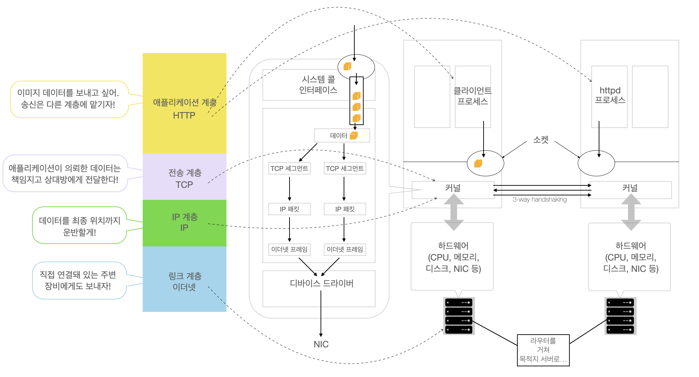

커널에 ‘TCP/IP로 통신하고 싶으니까 상대방 애플리케이션과 통신할 수 있는 회선을 열어줘’라고 외뢰(시스템 콜).
- 이때 접속 대상 서버의 IP 주소와 TCP포트의 2가지 정보가 필요.
외뢰 받은 커널은 소켓을 만들어 줌(데이터를 보내기 위해 구멍을 연 것).
TCP를 사용한다는 것과 IP 주소 및 포트 번호를 커널에 전달(시스템 콜)하면, 접속 대상 서버와의 연결이 생성 됨.
이때 상대방 서버에서도 소켓이 만들어지며 상대 서버와의 사이에 가상 경로(버츄얼 서킷)가 생성됨.
- 실제 데이터는 물리적인 통신 케이블을 통해 긴 여정을 거쳐서 상대방에게 전달되는 것이지만, 프로세스 관점에서는 소켓에 기록한 데이터가 가상 경로를 통해서 상대 통신 소켓으로 나오는 것.
- 가상 경로를 생성할 때 TCP의 3-way handshaking을 통해 생성함.
- 간단히 예를 들면, 상대 서버가 80포트를 리슨하고 있다면 80포트로 통신 요구가 오고 별 문제가 없으면 열어도 된다고 응답. 그리고 나서 가상경로가 열리는데, 이 과정에서 3번의 회신이 오가서 3-way handshaking이라고 함.
소켓에 기록된 데이터는 큐(FIFO)를 경유해서 커널 내 네트워크 처리 부분에 전달됨.
큐를 거쳐 커널에 전달된 데이터는 소켓 버퍼라는 메모리 영역에서 처리되는데, 데이터에 TCP 헤더를 붙여서 TCP 세그먼트를 생성함.
TCP 세그머트가 만들어지면 다음은 IP 처리가 시작되는데, 이때 TCP 세그먼트에 IP 헤더를 붙여서 IP 패킷을 생성.
- IP 패킷(IP 다이어그램) == IP 헤더 + TCP 세그먼트 == IP 헤더 + TCP 헤더 + 데이터
- 대상 서버까지는 이 IP 패킷 형태로 네트워크를 경유해서 도달함. (IP 헤더에는 최종 목적지 서버의 IP 주소가 기록됨.)
IP 패킷이 만들어지면 계속해서 링크 계층(대표적인 프로토콜: 이더넷, ethernet)의 처리가 시작됨.
- IP 패킷에 이더넷 헤더와 푸터를 붙여서 이더넷 프레임을 만든다.
- 이더넷 헤더에는 링크 계층 주소인 MAC 주소가 기록되고, 목적지 IP 주소에 따라 라우팅 테이블을 이용해서 어떤 NIC에서 보내야 할지 결정.
그 후에 OS가 버스를 통해 NIC(Network Interface Controller)에 전달.
IP가 최종 목적지 서버까지 복수의 네트워크를 경유해서 데이터를 전송한다.
- 송신 및 수신 시에 서버 내에서만 처리되는 TCP와 달리 IP는 경로 도중에 다양한 처리가 이루어진다. e.g. 라우팅(Routing)